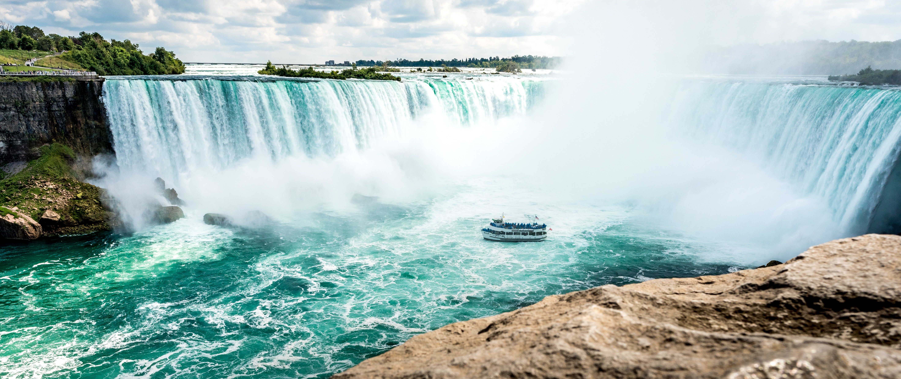

7 Wonders
Home
Tours
Credits
Credits
Ancient- Tan Jian Zhen
Great Pyramid at Giza
Hanging Gardens of Babylon
Statue of Zeus at Olympia
Temple of Artemis at Ephesus
Mausoleum at Hapcarnassus
Colossus of Rhodes
Lighthouse of Alexandria

Natural- Adeline Wong Qi Yuan
Aurora
Grand canyon
Great Barrier Reef
Mount Everest
Paricutin
Victoria Falls
Harbor of Rio de Janeiro
Mordern- Ana Katrina Dolars
The Great wall of China
Christ the Redeemer Statue
Machu Picchu
Chichen Itza
The Roman Colosseum
Taj Mahal
Petra